01
The Problem
Every monthly reflection took at least two days of work — repeated across six regions. Compiling data into a form program teams could use took a full week, using scattered tools like SurveyCTO, Zoho Analytics, and Data Studio.
From a week of reporting down to an hour — see what nonprofits do once their data is clean, connected, and finally theirs.
“Two things stood out (about Dalgo 2.0). First, the map of the country — you can drill down, and as NGOs we can use that for so many representations. Second, sharing dashboards publicly: it’s much easier to just give people a link than to keep generating logins for every layer. That’s a really big upgrade.”
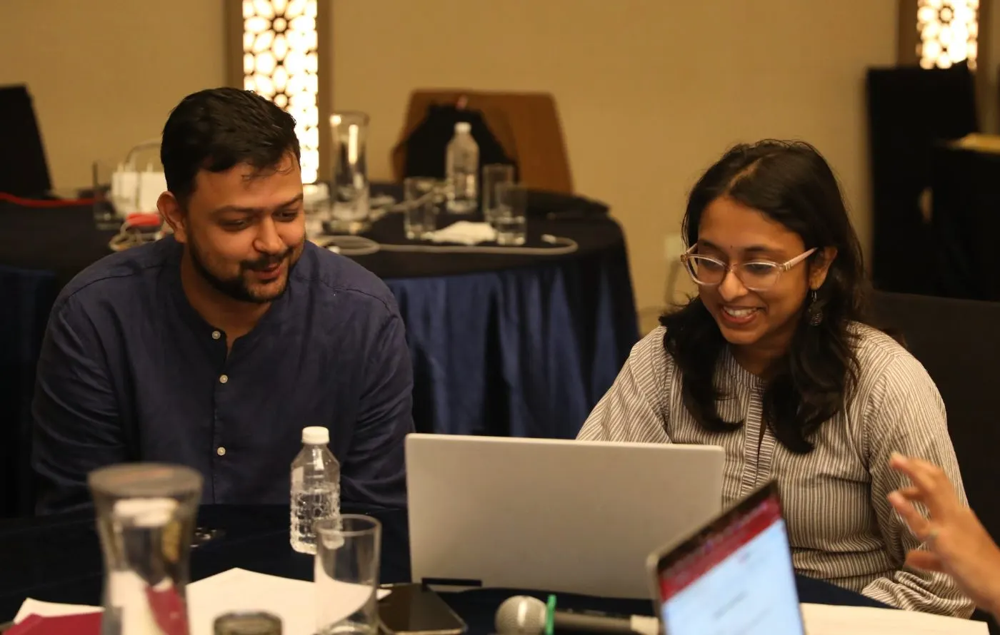
Chetan PruthiMake A Difference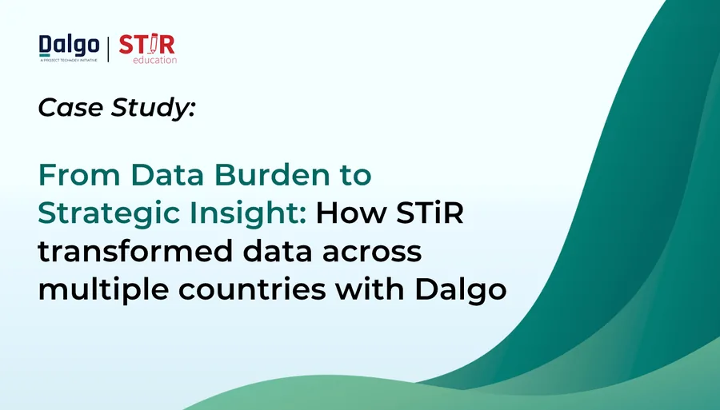
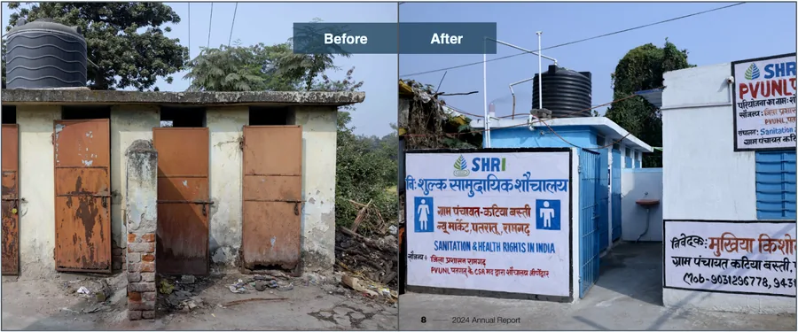
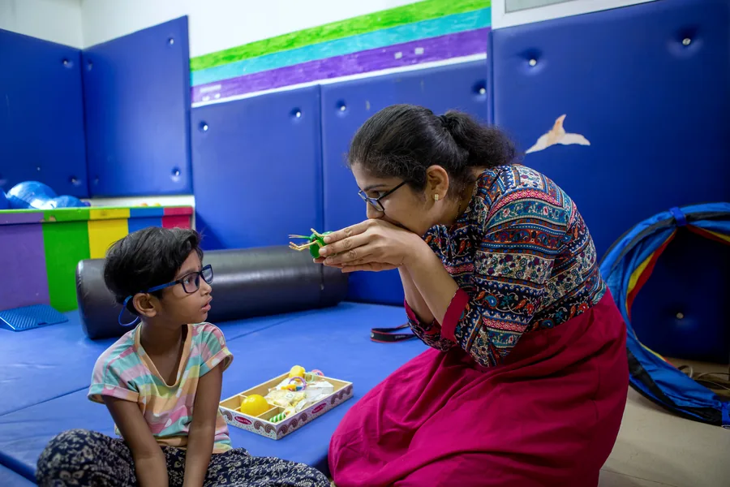
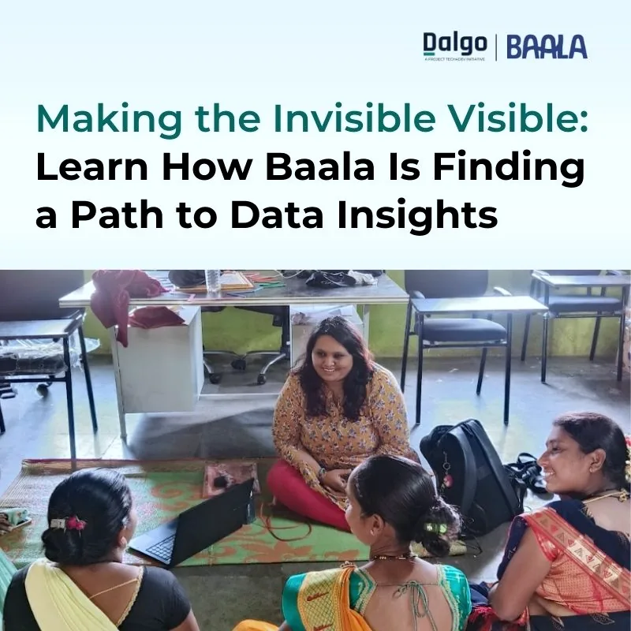
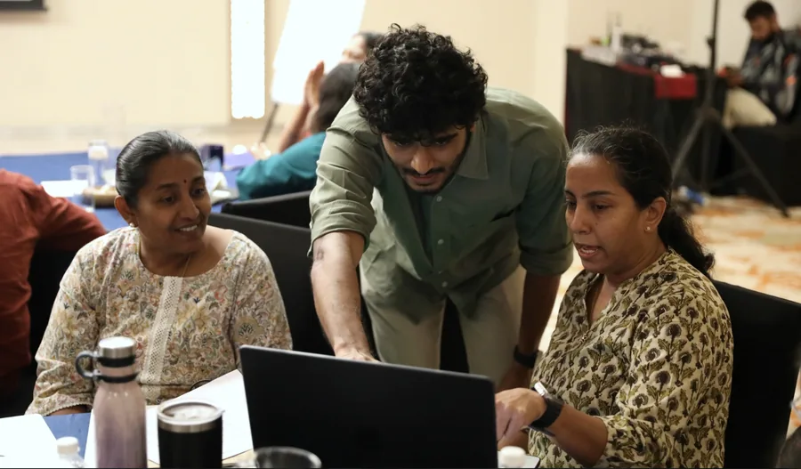
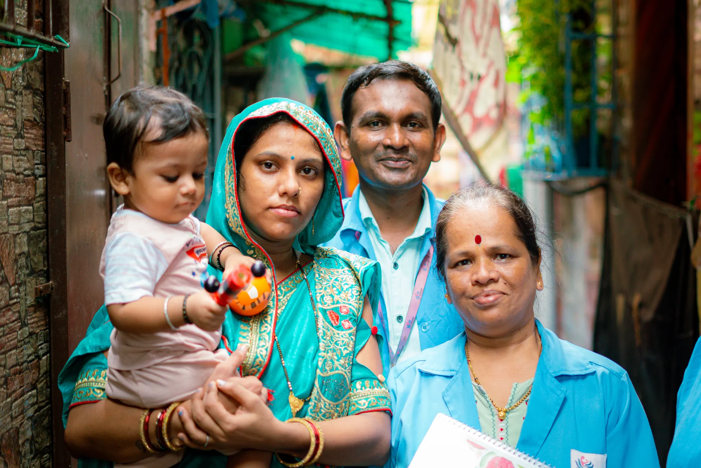
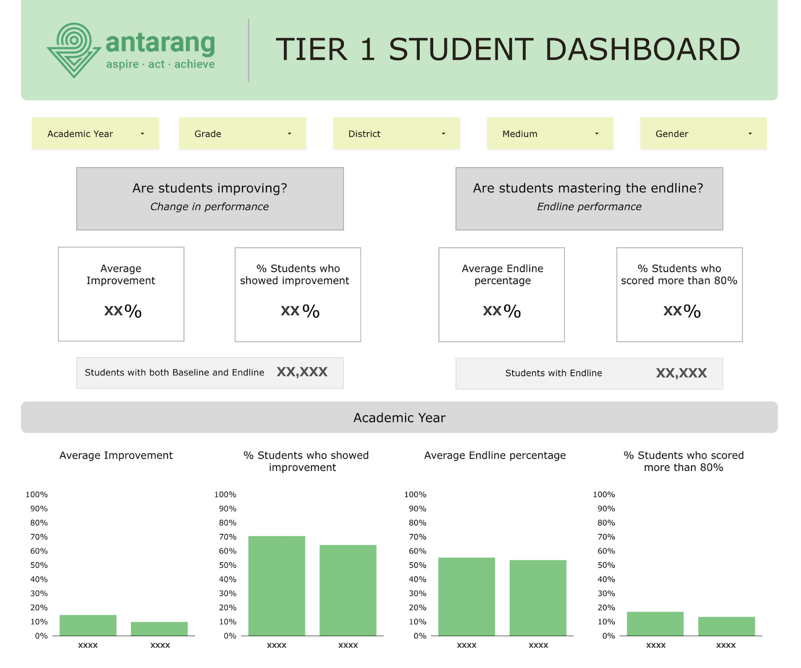
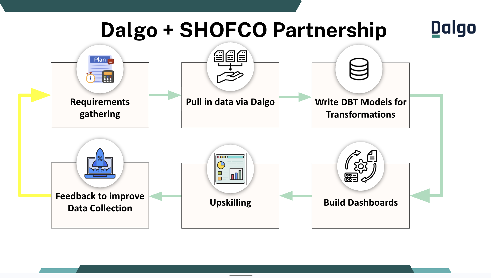
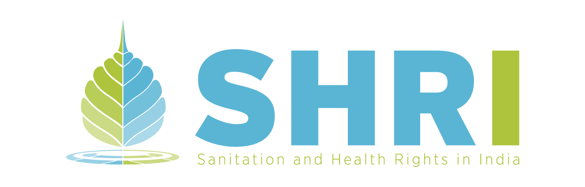

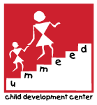
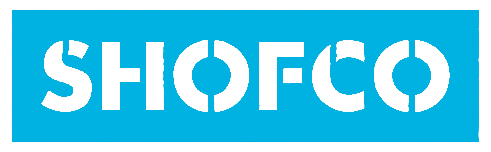
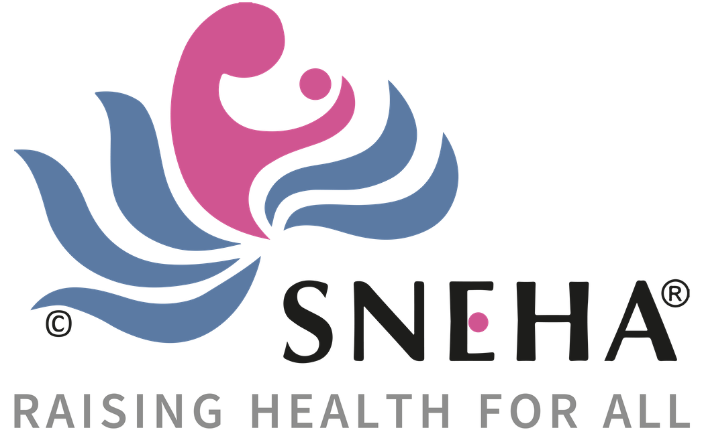
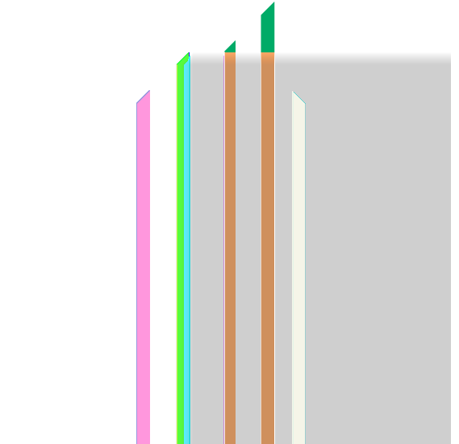
Every monthly reflection took at least two days of work — repeated across six regions. Compiling data into a form program teams could use took a full week, using scattered tools like SurveyCTO, Zoho Analytics, and Data Studio.
Dalgo automated the cleaning, aggregation, and dashboard updates through integrated pipelines — replacing a patchwork of disconnected tools with one system feeding self-service dashboards for program teams, leadership, and donors.
Irrespective of the questions that come our way — whether from donors or the government — we're now able to focus much more on building the story, rather than spending time working on the data to build that story.
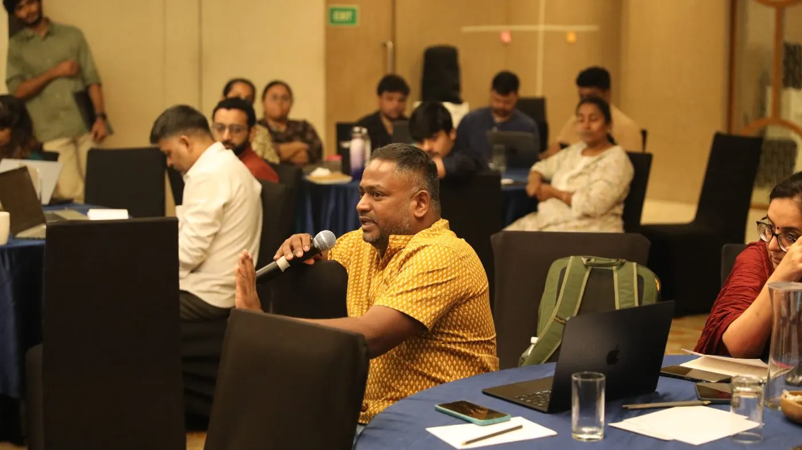
Organisations have used Dalgo to replace manual consolidation with automated data flows, give field, programme, M&E, and leadership teams more timely access to information, and create role-specific dashboards and reporting processes. Results vary by starting point and implementation scope, but the aim is consistent: less time preparing data and more time using it to improve programmes and communicate impact.
No. Dalgo is designed to help organisations build data maturity, including programme and M&E teams with limited technical capacity that are aspiring to use data more effectively. The right starting scope matters: a smaller organisation may begin with one high-value reporting workflow or programme rather than an organisation-wide rollout.